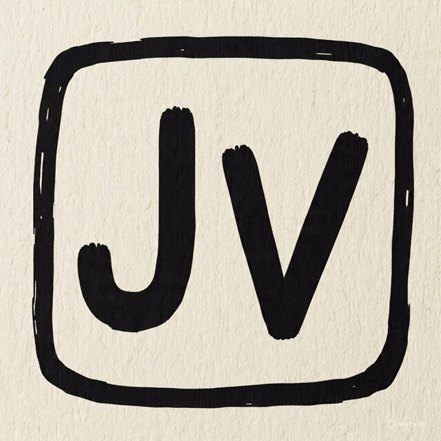

drwxr-xr-x
finetune-gemma4-to-generate-ascii-maze/
majid@dev ~ $ whoami
Majid Nasiri — Senior Applied AI/ML Engineer
majid@dev ~ $ status
● available Melbourne, Australia · AEST
majid@dev ~ $ deploy --env production --focus llm,cv,mlops_
Building practical, scalable AI systems — with a focus on LLMs, computer vision, and MLOps.
01 — whoami
Deep in build mode — shipping practical AI systems with a strong focus on LLMs, computer vision, and MLOps. I care about clean abstractions, reproducible pipelines, and tools developers actually enjoy using.
release_calm
Ship changes that don't wake anyone up at 3am.
automate_toil
If it's manual and repeated twice, it becomes a pipeline.
reproducible_by_default
Configs and seeds over tribal knowledge.
02 — ls -la projects/
drwxr-xr-x
jetvoice/

A lightweight voice-assistant pipeline for NVIDIA Jetson Nano: speech-to-text, LLM calling via the OpenAI API, and a dockerized deployment workflow, with voice activity detection and text-to-speech on the roadmap.
03 — cat stack.yaml
languages:
- python
- bash
ml:
- pytorch
- huggingface
- unsloth / lora
- vllm
- ollama
frameworks:
- langchain
- opencv
infra:
- docker
- linux
- git